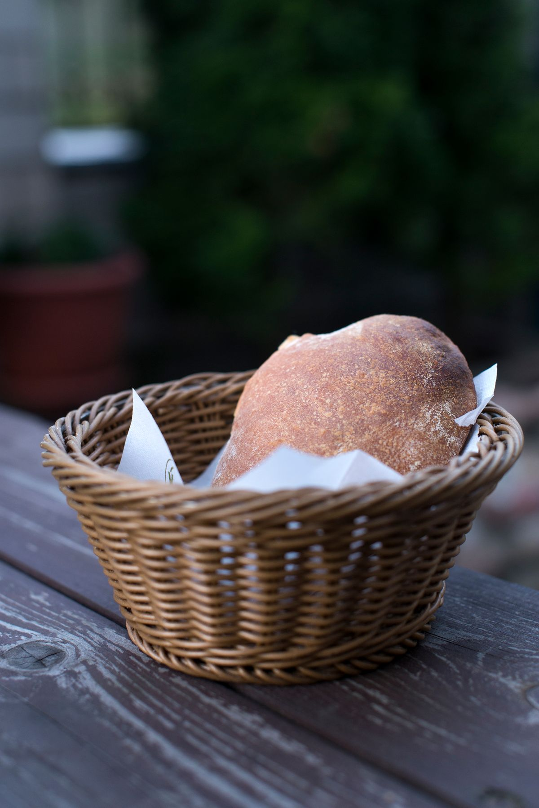
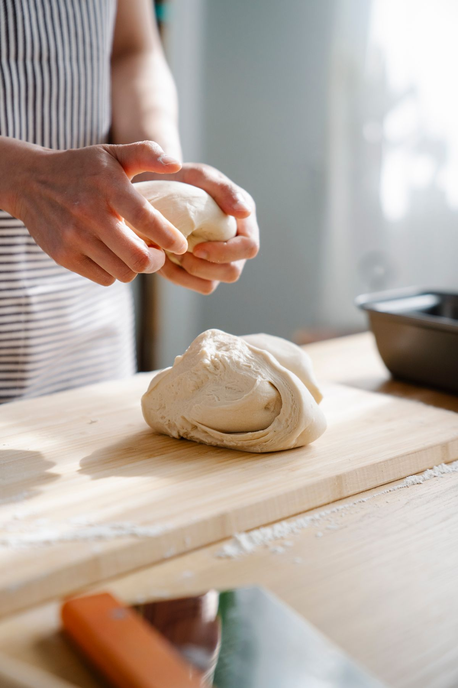
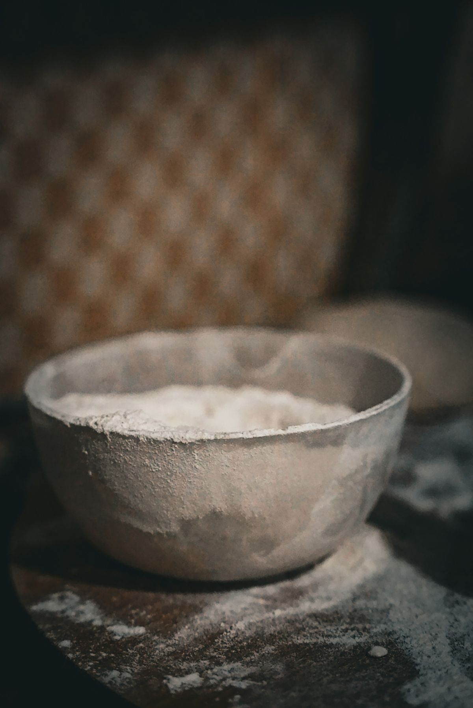

CROISSANT
クロワッサン
美しい層と軽やかな食感が、口コミで評判の一つ。
【要確認：価格】
MATSUMOTO, NAGANO
クロワッサンと、ハード系のパン。
旧開智学校の近く、クロリ BREAD&LIFE。
火〜土 9:00–18:00日曜・月曜 定休


01 / ABOUT US
松本市蟻ケ崎、旧開智学校の近くにあるパン屋です。口コミでは、クロワッサンの美しい層や軽やかな食感、バターの風味を楽しむ声が寄せられています。
ハード系やデニッシュの食感、明るくあたたかな接客も、親しまれている理由のようです。
【要確認：お店の想い・創業のこと】
シロクマのキャラクターグッズもあります。
02 / OUR BREAD
いつもの一つも、季節の楽しみも。
CROISSANT
美しい層と軽やかな食感が、口コミで評判の一つ。
【要確認：価格】
HARD BREAD & DANISH
ハード系のパンや、ザクザクとしたデニッシュも。
【要確認：商品名・価格】
SEASONAL
季節ごとの出会いも、パン選びの楽しみに。
【要確認：季節限定商品・価格】
【要確認：日ごとのラインナップ・販売状況】
【要確認：各商品の焼き上がり時間】
【要確認：予約の可否と方法】
【要確認：売り切れ時の営業・告知方法】

04 / SHOP INFORMATION
臨時休業などの最新情報は、Instagramをご確認ください。
最新情報はInstagramで ↗